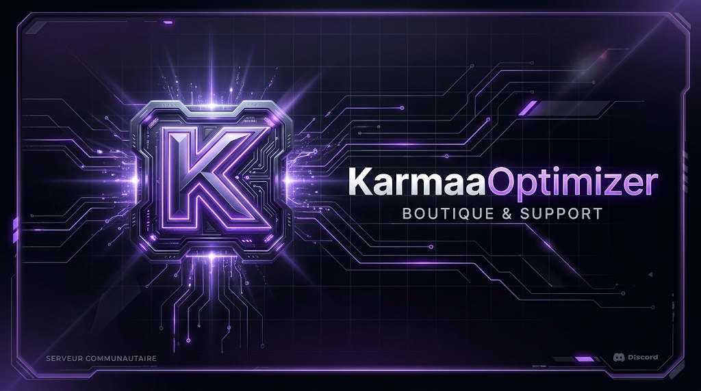

Windows 10 et 11 · 30 €, payé une fois
Des jeux plus fluides.
Le même PC.
KarmaaOptimizer repère ce qui ralentit Windows et le corrige. Tu vois chaque changement, et tu peux tout annuler en un clic.
Trois étapes. Rien au hasard.
- 1
Scanner
19 vérifications sur ton Windows. Tu obtiens une note de A+ à F et la liste claire de ce qui freine ton PC.
- 2
Appliquer
Choisis un profil ou les réglages un par un. Chacun des 91 réglages te dit ce qu’il change avant que tu cliques.
- 3
Mesurer
Lance le banc d’essai avant et après. Tu gardes ce qui aide, tu annules le reste.
Sache où tu en es.
Pas de message vague « PC optimisé ! ». Tu as une note, les points qui échouent, et pourquoi chacun compte.
Tout ce qu’il y a dans l’app
Scan et note
19 vérifications, notées de A+ à F. Tu vois ce qui coince et pourquoi.
91 réglages
Chacun est expliqué avant de l’appliquer. Un clic remet tout comme avant.
HUD en jeu
Une petite superposition avec les infos de ton matériel pendant que tu joues.
Banc d’essai
16 outils pour la souris, la latence et le matériel, pour comparer avant et après.
Réseau
Mesure ton ping et sa stabilité pour trouver d’où viennent les pics.
Guide BIOS
Les réglages qui valent le coup, étape par étape.
KarmaaAI
Un doute sur un réglage ? Pose la question, tu as une réponse claire.
Choisis jusqu’où tu vas.
Standard
Un point de départ sûr, au quotidien.
Lourd
Plus de marge pour les jeux gourmands.
Extrême
Chaque milliseconde, pour le compétitif.
Les gains dépendent de ton matériel. Le banc d’essai te montre les vrais chiffres.
Ce qu’elle ne fait pas
Toucher à tes jeux
Rien n’est injecté dans tes jeux.
Cacher des changements
Chaque réglage est listé et expliqué.
T’enfermer
Tout s’annule en un clic.
Promettre des miracles
Pas de « +200 FPS ». Tu mesures toi-même.
30 €. Une fois.

Licence à vie · 1 PC 30 €- Les 91 réglages et les 3 profils
- Scan, HUD, banc d’essai et guide BIOS
- L’assistant KarmaaAI
- De l’aide sur Discord, 7 jours sur 7
Comment acheter
- Rejoins le Discord
- Ouvre un ticket
- Paie et reçois ton accès
Questions
Est-ce que je risque un ban anti-triche ?
Non. L’application modifie des réglages Windows et n’injecte jamais rien dans tes jeux.
Je peux annuler les changements ?
Oui. Les 91 réglages s’annulent en un clic, et rien n’est caché.
Quelles versions de Windows ?
Windows 10 et Windows 11.
Combien ça coûte ?
30 €, payé une fois. C’est une licence à vie pour 1 PC.
Comment j’obtiens ma licence ?
Rejoins le Discord officiel, ouvre un ticket et tu reçois ton accès là-bas.
Standard, Lourd ou Extrême ?
Commence par Standard. Lourd donne plus de marge aux jeux gourmands, Extrême vise chaque milliseconde. Mesure chacun avec le banc d’essai.